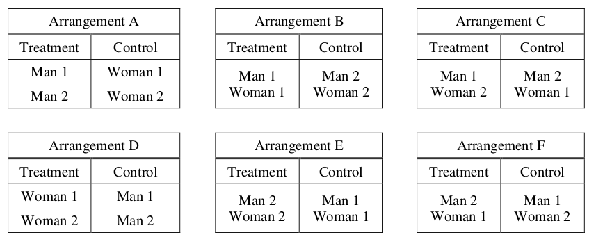
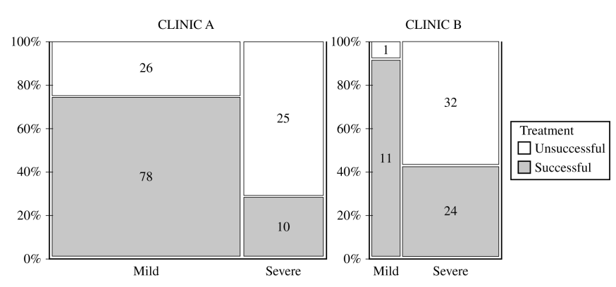

Statistics: Quarter Three#
Celebration of Knowledge#
2005, Free Response Form B, #2
For an upcoming concert, each customer may purchase up to 3 child tickets and 3 adult tickets. Let C be the number of child tickets purchased by a single customer. The probability distribution of the number of child tickets purchased by a single customer is given in the table below.
c |
0 |
1 |
2 |
3 |
p(c) |
0.4 |
0.3 |
0.2 |
0.1 |
Use this information to solve the following problems.
Compute the mean and the standard deviation of C.
Suppose the mean and the standard deviation for the number of adult tickets purchased by a single customer are 2 and 1.2, respectively. Assume that the numbers of child tickets and adult tickets purchased are independent random variables. Compute the mean and the standard deviation of the total number of adult and child tickets purchased by a single customer.
Suppose each child ticket costs $15 and each adult ticket costs $25. Compute the mean and the standard deviation of the total amount spent per purchase.
2009, Free Response Form B, #2
The ELISA tests whether a patient has contracted HIV. The ELISA is said to be positive if it indicates that HIV is present in a blood sample, and the ELISA is said to be negative if it does not indicate that HIV is present in a blood sample. Instead of directly measuring the presence of HIV, the ELISA measures levels of antibodies in the blood that should be elevated if HIV is present. Because of variability in antibody levels among human patients, the ELISA does not always indicate the correct result.
As part of a training program, staff at a testing lab applied the ELISA to 500 blood samples known to contain HIV. The ELISA was positive for 489 of those blood samples and negative for the other 11 samples. As part of the same training program, the staff also applied the ELISA to 500 other blood samples known to not contain HIV. The ELISA was positive for 37 of those blood samples and negative for the other 463 samples.
When a new blood sample arrives at the lab, it will be tested to determine whether HIV is present. Using the data from the training program, estimate the probability that the ELISA would be positive when it is applied to a blood sample that does not contain HIV.
Among the blood samples examined in the training program that provided positive ELISA results for HIV, what proportion actually contained HIV?
When a blood sample yields a positive ELISA result, two more ELISAs are performed on the same blood sample. If at least one of the two additional ELISAs is positive, the blood sample is subjected to a more expensive and more accurate test to make a definitive determination of whether HIV is present in the sample. Repeated ELISAs on the same sample are generally assumed to be independent. Under the assumption of independence, what is the probability that a new blood sample that comes into the lab will be subjected to the more expensive test if that sample does not contain HIV?
2017, Free Response, #6
Consider an experiment in which two men and two women will be randomly assigned to either a treatment group or a control group in such a way that each group has two people. The people are identified as Man 1, Man 2, Woman 1, and Woman 2. The six possible arrangements are shown below.
Two possible methods of assignment are being considered: the sequential coin flip method and the chip method. For each method, the order of the assignment will be Man 1, Man 2, Woman 1, Woman 2.
Use this information to complete the following problems.
Complete the table below by calculating the probability of each arrangement occurring if the sequential coin flip method is used.
Arrangement |
A |
B |
C |
D |
E |
F |
P(Arrangement) |
Complete the table below by calculating the probability of each arrangement occurring if the chip method is used.
Arrangement |
A |
B |
C |
D |
E |
F |
P(Arrangement) |
For the sequential coin flip method, what is the probability that Man 1 and Man 2 are assigned to the same group?
For the chip method, what is the probability that Man 1 and Man 2 are assigned to the same group?
Sixteen participants consisting of 10 students and 6 teachers at an elementary school will be used for an experiment to determine lunch preference for the school population of students and teachers. As the participants enter the school cafeteria for lunch, they will be randomly assigned to receive one of two lunches so that 8 will receive a salad, and 8 will receive a grilled cheese sandwich. The students will enter the cafeteria first, and the teachers will enter next. Which method, the sequential coin flip method or the chip method, should be used to assign the treatments? Justify your choice
2022, Free Response, #6
To compare success rates for treating allergies at two clinics that specialize in treating allergy sufferers, researchers selected random samples of patient records from the two clinics. The following table summarizes the data.
Clinic A |
Clinic B |
Total |
|
Unsuccessful Treatment |
51 |
33 |
84 |
Successful Treatment |
88 |
35 |
123 |
Total |
139 |
68 |
207 |
Complete the following table by recording the relative frequencies of successful and unsuccessful treatments at each clinic.
Clinic A |
Clinic B |
|
Unsuccessful Treatment |
||
Successful Treatment |

Based on the relative frequency table in the previous part, which clinic is more succesfful in treating adllergy sufferers? Justify your answer.
Based on the design of the study, would a statistically significant result allow the researchers to conclude that receiving treatments at the clinic you selected in part b causes a higher percentage of successful treatments than at the other clinic? Explain your answer.
A physician who worked at both clinics believed that it was important to separate the patients in the study by severity of the patient’s allergy (severe or mild). The physician constructed the following mosaic plot. The values in the mosaic plot represent the number of patients who were either successfully treated or unsuccessfully treated in each allergy severity group within each clinic. For example, the value 78 represents the number of patients successfully treated in the mild group within Clinic A.
Based on the mosaic plot, the physician concluded the following:
For mild allergy sufferers, Clinic B was more successful in treating allergies.
For severe allergy sufferers, Clinic B was more successful in treating allergies.
Use this information to answer the following questions,
For each clinic, which allergy severity is treated more successfully? Justify your answer.
For each clinic, which allergy severity is more likely to be treated? Justify your answer.
Using your answers from part d, give a reasonable explanation of why the more successful clinic identified in part b is the same as or different from the physician’s conclusion that Clinic B is more successful in treating both severe and mild allergies.
2012, Free Response, #6
TODO